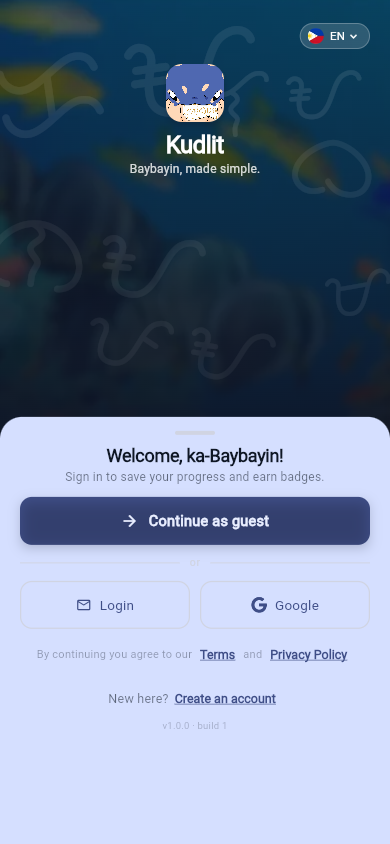
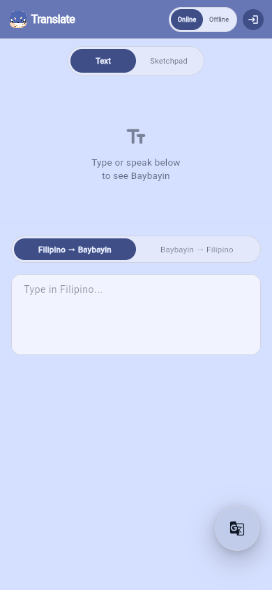

Start instantlyContinue as a guest, or sign in with Google, your phone, or email.
Scan a glyph and see what it says. Turn Filipino into Baybayin, then practice the marks until they stick.

Kudlit brings scanning, translation, lessons, glyph references, and companion guidance into a single mobile learning flow.
Install the app, then try scan, translate, lessons, and a chat with Butty.